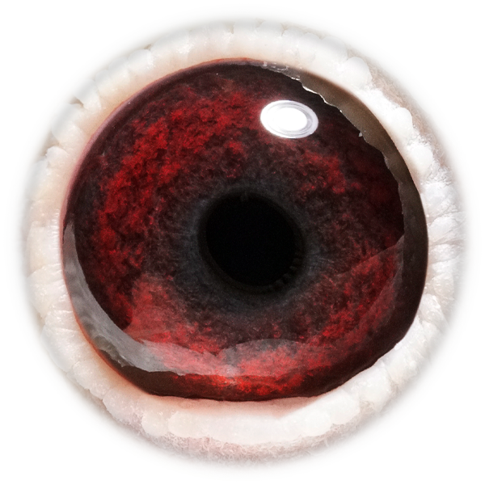
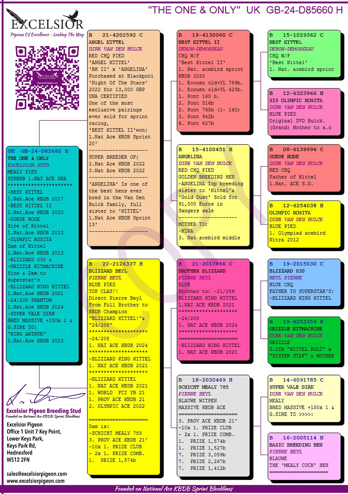

Kweekprofiel
GB24-D85660 · Excelsior Stud

Dehon-Demonseau / Dirk van den Bulck / Pierre Beyl
GB24-D85660
The One & Only verenigt vier absolute toplijnen: Best Kittel II, Angelina, Blizzard King Kittel en het stamkoppel van Pierre Beyl.


Resultaten bij andere liefhebbers
De vijf sterkste prestaties van alle nakomelingen samen, geselecteerd op clubcoëfficiënt.
| Ringnummer | Vlucht | Club / lokaal | Groter verband |
|---|---|---|---|
| BE26-4034125 | Pont · 189 km | 2 / 688 | 74 / 4.925 |
| BE26-4034125 | Noyon · 151 km | 1 / 250 | 4 / 4.715 |
| BE26-4034167 | Pont · 189 km | 7 / 688 | 149 / 4.925 |
| BE26-4034125 | Noyon · 151 km | 1 / 97 | 17 / 3.320 |
| BE26-4034125 | Noyon · 151 km | 3 / 147 | 123 / 6.190 |
Klik op een ringnummer om rechtstreeks naar de juiste duif op de referentiepagina te gaan.